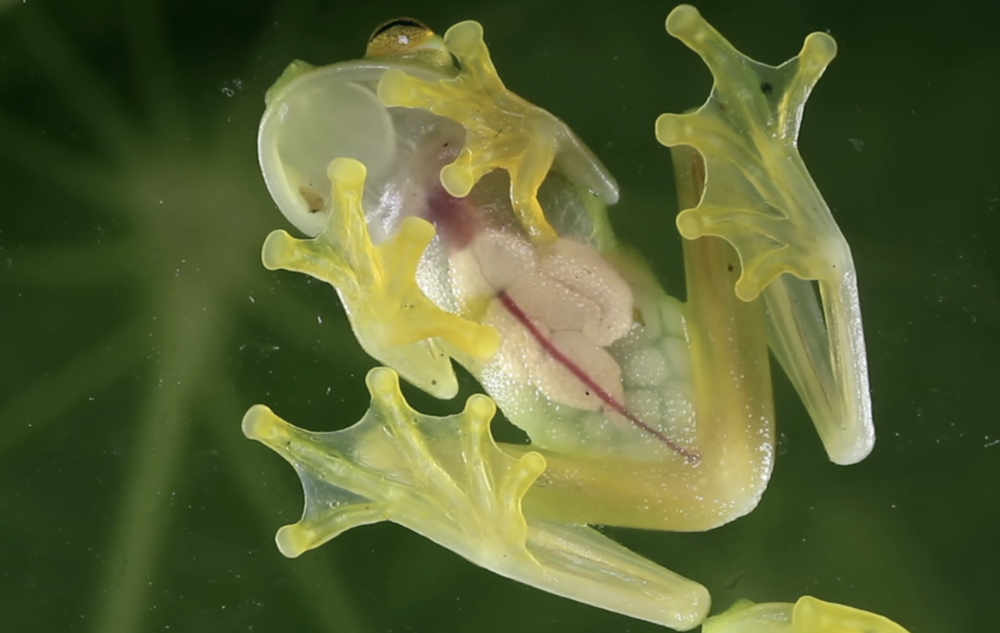

< back
vocab
- frisson aka aesthetic chills or psychogenic shivers; a psychophysiological response to rewarding stimuli that often induces a pleasurable or otherwise positively-valenced affective state and transient paresthesia
- Ballmer Peak theory that computer programmers obtain quasi-magical, superhuman coding ability when they have a blood alcohol concentration between 0.129% and 0.138%
- physiocrat member of an 18th century group of French economists who believed that agriculture was the source of all wealth and that agricultural products should be highly priced. advocating adherence to a supposed natural order of social institutions, they also stressed the necessity of free trade
- kokopelli a fertility god of some southwestern North American Indian cultures. depcited as a hunchbacked flute player, known as a playful prankster/storyteller
- glass frog species of frog indigenous to Central and South America that can become semitransparent, storing red blood cells in their liver
